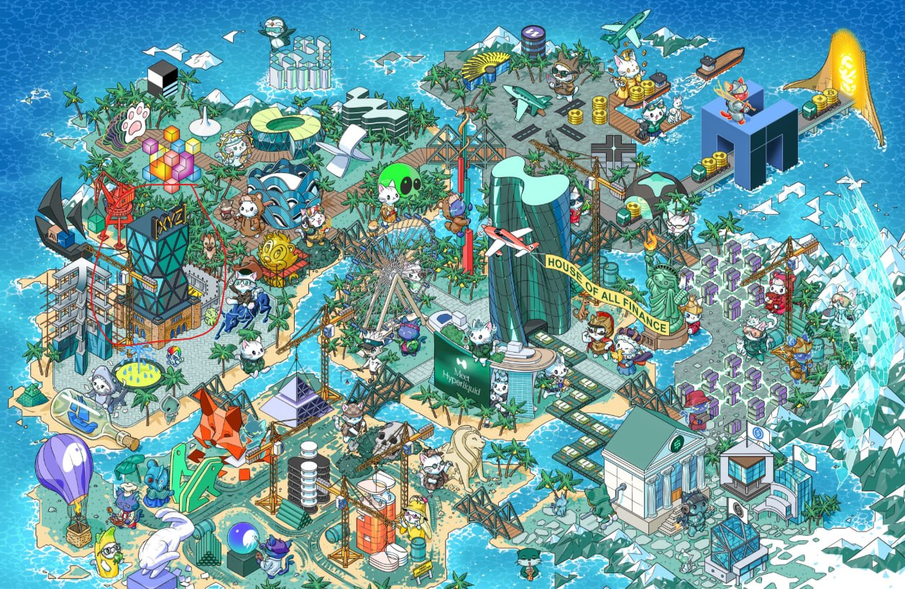
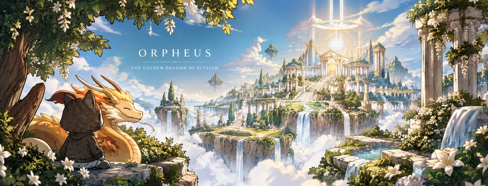
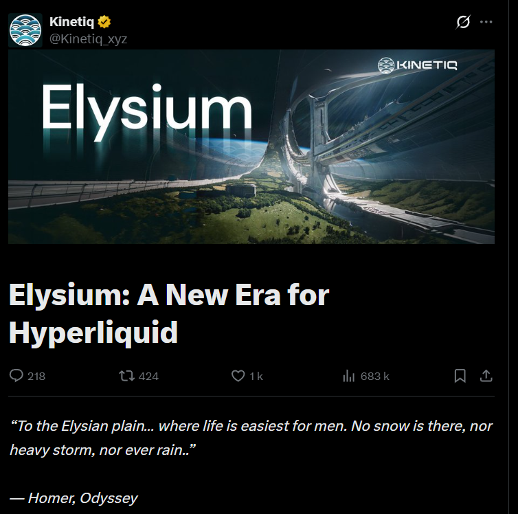
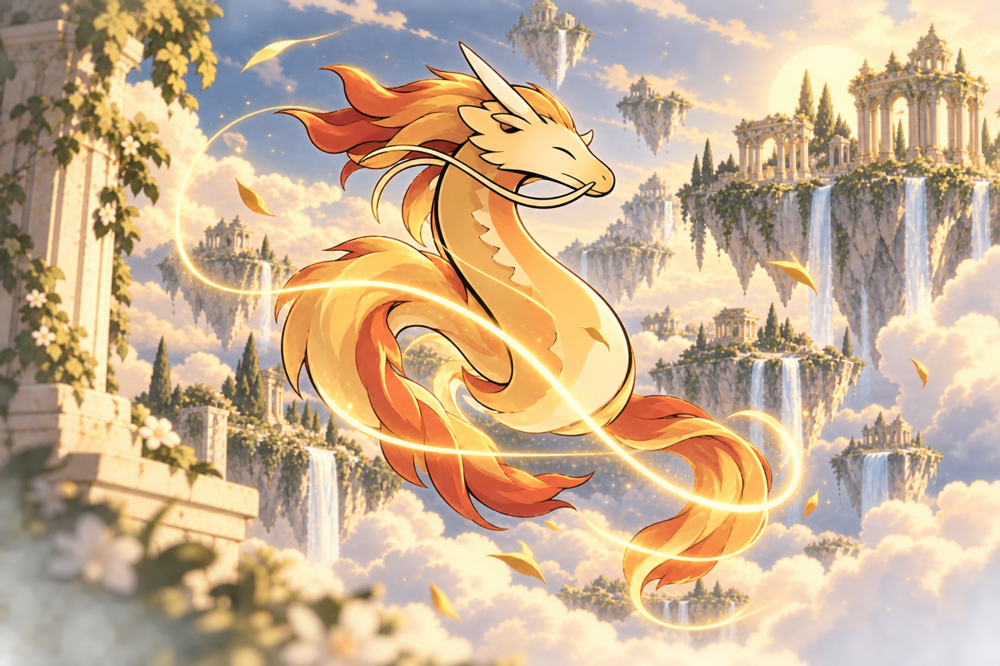
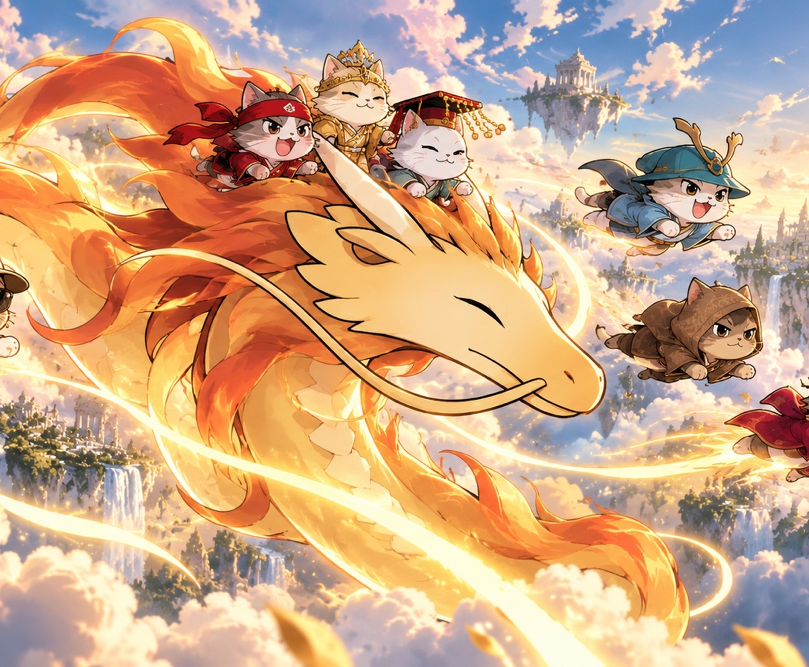

#1
HYPERLIQUID EVM
A dragon in the ecosystem map.
One small detail in a world full of stories.
View original image ↗
01 — THE BEGINNING03 / THE MYTH
In Greek mythology, Orpheus descends into the Underworld to bring Eurydice back.
His journey is a story of devotion, courage, and the hope of returning from darkness.
A mythological foundation for a character built around discovery and ascension.
KINETIQ ON ODYSSEUS
KINETIQ is building a mythological product with Elysium, referring to Odyssey itself.
View the original post ↗
04 / THE REVEAL
MEET ORPHEUS
An original character in the visual language of Hypurr: expressive, mythical, and unmistakably part of the ecosystem.

05 / THE LAUNCH
THE ASCENSION
Ascend is the next chapter for Orpheus: a launchpad for the story, a home for the community, and a way to turn a character into a recognizable creative universe.
THE NEXT CHAPTER

06 / THE ALPHA
Turn the prize into community momentum.
Buy Enhanced Token Info at launch.
Reward artists who help expand the Orpheus universe.
$ORPHEUS bought at launch. Planned airdrop for the 7 Hypurr with the Gold Dragon Pet trait.